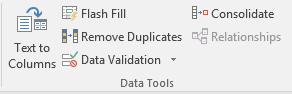

Use data validation to restrict the type of data or the values that users enter into a cell. One of the most common data validation uses is to create a drop-down list.
Select the cell(s) you want to create a rule for.
Select Data >Data Validation.

On the Settings tab, under Allow, select an option:
Whole Number - to restrict the cell to accept only whole numbers.
Decimal - to restrict the cell to accept only decimal numbers.
List - to pick data from the drop-down list.
Date - to restrict the cell to accept only date.
Time - to restrict the cell to accept only time.
Text Length - to restrict the length of the text.
Custom – for custom formula.
Under Data, select a condition.
Set the other required values based on what you chose for Allow and Data.
Select the Input Message tab and customize a message users will see when entering data.
Select the Show input message when cell is selected checkbox to display the message when the user selects or hovers over the selected cell(s).
Select the Error Alert tab to customize the error message and to choose a Style.
Select OK.
Now, if the user tries to enter a value that is not valid, an Error Alert appears with your customized message.